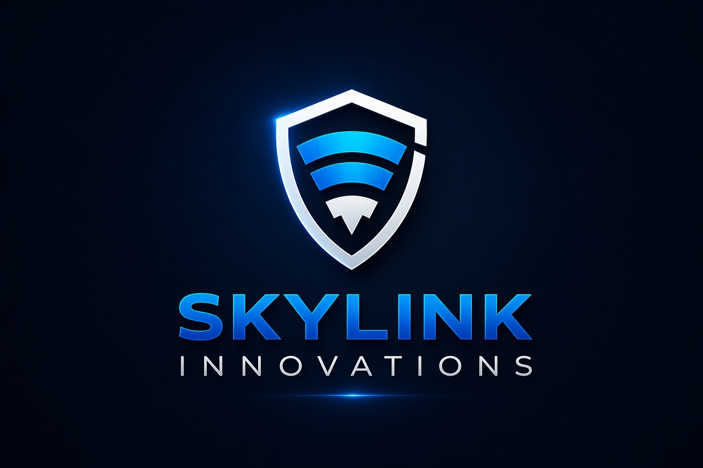

The same cloud-native intelligence that protects high-end residences now secures the warehouses, logistics yards, factories, and distribution networks that power South African industry. Skylink Industrial brings unified site-wide visibility, automated access control, and 24/7 cloud monitoring to operations that simply cannot afford downtime.
Skylink Industrial is a single platform that unifies physical security, access control, and 24/7 cloud monitoring across every site you operate — from a single warehouse to a national distribution network.
From cold-chain facilities to bulk-goods depots, Skylink delivers full-coverage CCTV, smart access control on every loading bay, and intelligent alerts the moment something deviates from the norm.
Yards, depots, and trans-shipment hubs run on tight margins and tight schedules. Skylink secures every gate, tracks every vehicle, and gives operations one live view of the network.
Production-floor surveillance, hazard detection, and integrated safety alarms — backed by always-on cloud monitoring that surfaces only what matters to operations and safety teams.
Utilities, data centres, and high-value sites where downtime isn't acceptable. Skylink delivers a hardened, redundant command layer with multi-site escalation and full audit trails.
Asset and material theft are constant risks on active sites. Skylink deploys rapidly, scales to fenceline length, and breaks down cleanly when the project moves to its next phase.
Lifestyle estates, business parks, and mixed-use developments rely on Skylink to give residents, tenants, and management one consistent, premium platform across every shared system.
Combine Skylink Industrial with our drone security solutions for complete site-wide aerial coverage. Live drone feeds stream into the same dashboard your security team already uses — no extra app, no extra complexity.
Tell us about your project and our team will craft a tailored deployment plan — typically within 24 hours.